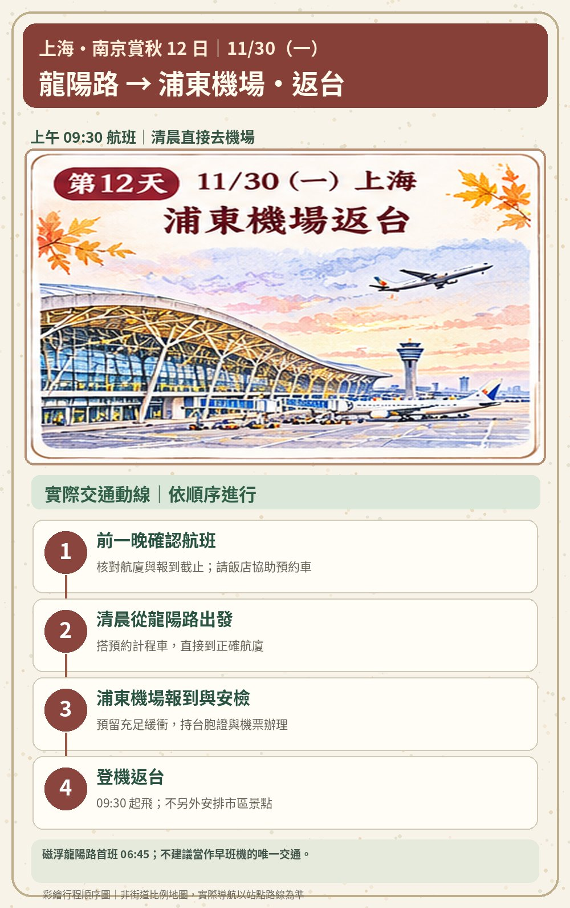

龍陽路至浦東機場
🍁 11-30｜龍陽路至浦東機場｜浦東機場清晨交通圖

查看交通轉乘四步驟圖（輔助資料）

🚆 11/30｜返台｜龍陽路住宿 → 浦東機場
- 前一晚：查機票及航廈
依實際機票確認 09:30 航班、航廈、報到截止與行李額度，請飯店協助預約車
- 清晨：搭預約計程車
以直接到浦東機場正確航廈為主，按航空公司建議倒推抵達時間，另留交通與安檢緩衝
- 浦東機場：報到與安檢
持台胞證及相關旅行證件，按航空公司程序辦理登機；先確定報到櫃檯與航廈
- 完成登機
無須另排景點探店；若有空餘時間在安檢後用早餐或補水即可
龍陽路往浦東磁浮首班 06:45；對 09:30 航班而言，仍須計入出站至航廈、報到與安檢，不建議以磁浮作唯一方案。
已核對交通營運資訊；實際班次及現場管制可能更新。官方或交通資料
11/30｜今天先看路線圖、去程、回程；所有未完成查證的資訊維持明確標示。
去程｜現場怎麼走
出發起點：龍陽路實際住宿飯店（依訂房地址）
前一晚確認 09:30 航班的實際起飛日期、航廈及航空公司報到截止，請飯店預約清晨計程車，直接抵達正確航廈。
清晨不建議把首班磁浮當成唯一方案；應預留車程、塞車、排隊與安檢緩衝。
尚未建立可核實的地圖定位連結
機場｜報到與安檢
入航廈先看航班資訊屏，核對櫃檯與報到截止，再依現場標示辦理行李托運、安檢及登機。
隨身備妥機票訂位資料、台胞證、返台旅行所需證件與隨身物品；以實際航空公司規定為準。
📖 查看本路線完整圖文登機前｜最後確認
登機前：核對登機門及最後登機時間，安檢後再用早餐與補水，不另外安排市區景點。
如登機門變更，以機場航班顯示及廣播為準。
尚未建立可核實的地圖定位連結
地圖搜尋不等於已啟動導航；請確認目的地後再規劃路線。